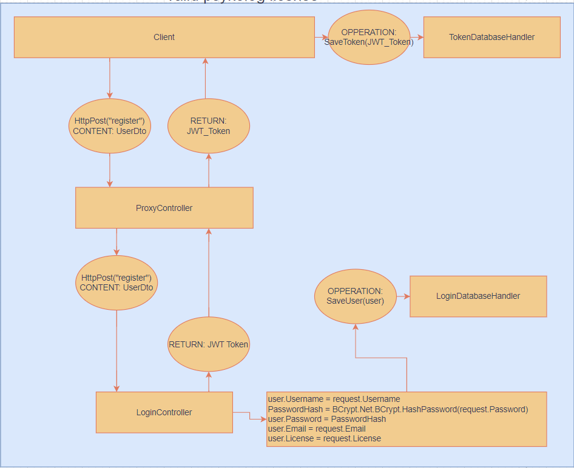

Vi har en hjemmeside, og den skal kunne understøtte, at man registere og logge ind. Det kræver at vores microservice kan håndtere registrering og logge ind-funktionerne. Inden at vi faktisk Implimentere funktionerne, så skal vi designe dem først. Fra start til slut. Min første iteration var ikke alt for fed, da den metode, er ret usikker og nok også ret u-effiktiv.
Som vi kan se på underliggende billede, så er den ret simpel. CONTENT er bare en string af
navn, alder, email og potientielt en license. Denne string ville ligne dette: "Steve Jobs:45:SteveJobs@outlook.com:License123".
LoginToken er faktisk bare det samme som CONTENT, men når det er blevet gemt i
databasen, så kalder vi det en token.
Som vi kan se på billedet, så er det lidt rodet, og det er heller ikke det mest konsistente flow af servicen. Det skal vi have gjort noget ved. Ved at lave en DTO (Data Transfer Object), kan vi standardisere hvordan vi sender data. Og ved at bruge en JWT token, istedet for vores ejen janky token, kan vi også standardisere hvordan vi håndtere identiteter i hele systemet.
Et nyt flowdiagram kan således laves ud fra vores nye kriterier. Som vi kan se, så er dette flowchart mere konsistent og overskueligt. Det eneste job ProxyController har, er at redirecte kald fra klienten til de andre services. UserDto består af 4 dele: Username, Email, Password og License. Siden at det hele køre over Https, så er det krypteret, og sikkert at sende som plaintext. Men lige så snart at det password rammer LoginService, så bliver det hashet
